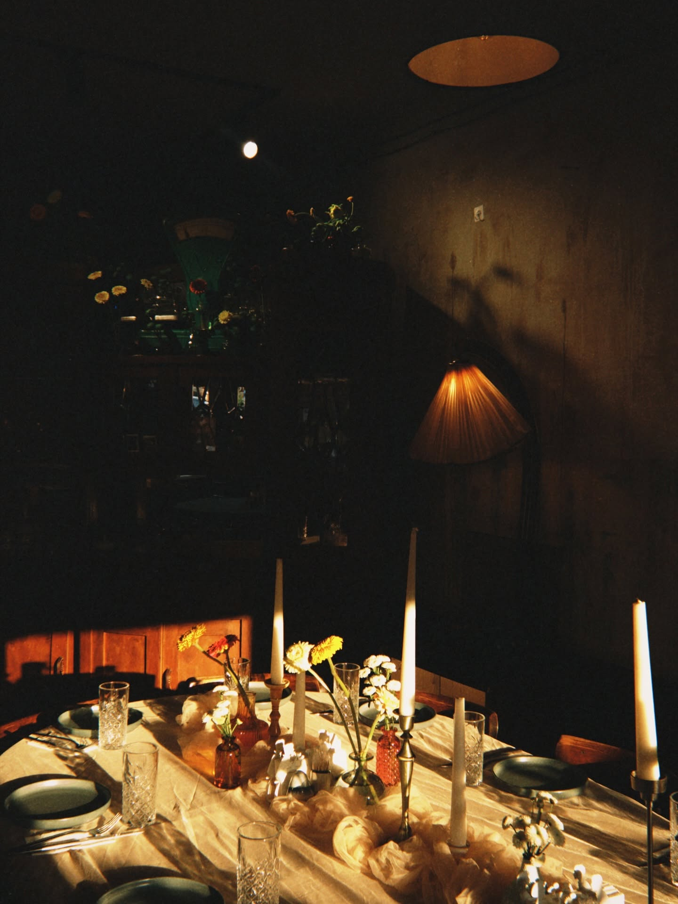

Authentic Georgian cuisine served in a cozy old-world setting. Experience the true warmth of Tbilisi hospitality and family-run recipes.
View MenuIn Georgia, a guest is considered a gift from God. At Natra, we embody this ancient proverb by serving every meal with open arms and heartfelt smiles.
Authentic family recipes, piping-hot dishes straight from the oven, and the kind of hospitality that makes you want to stay all night.
Tables at Natra fill up fast—claim yours now and experience the true soul of the Caucasus.
Contact Us